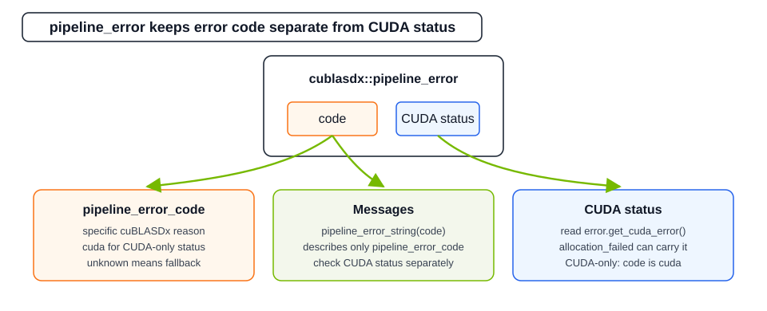

Pipeline Creation Result#
The pipelining API creates host-side pipeline objects before launching kernels. Creation functions return an
expected result so callers can handle recoverable validation and CUDA runtime failures without relying on assertions.
Creation Return Type#
suggest_pipeline and make_pipeline return a non-movable
cublasdx::detail::expected<host_pipeline, pipeline_error> object.
API |
Meaning |
|---|---|
|
Enters the success branch when a usable host pipeline was created. |
|
Enters the error branch when pipeline creation failed. |
|
Required dynamic shared-memory alignment for the device pipeline storage. |
|
Required dynamic shared-memory bytes for the device pipeline storage. |
|
CUDA block configuration expected by this pipeline. |
|
Device-side pipeline handle to pass by value to the kernel. |
|
Returns |
pipeline_error#
cublasdx::pipeline_error stores the cuBLASDx validation reason and, when applicable, a CUDA runtime status.

auto pipeline = cublasdx::suggest_pipeline<BLAS>(global_a, global_b);
if(not pipeline) {
auto const& error = pipeline.error();
if (error.code != cublasdx::pipeline_error_code::none) {
std::cout << cublasdx::pipeline_error_string(error.code);
}
if (error.get_cuda_error() != cudaSuccess) {
std::cout << cudaGetErrorString(error.get_cuda_error());
}
}
Member |
Meaning |
|---|---|
|
A |
|
CUDA runtime status associated with allocation or emulation preprocessing. In NVRTC builds this returns the stored integer status. |
Emulation preprocessing can fail after cuBLASDx validation succeeds. In that case, code == pipeline_error_code::cuda
and the CUDA runtime status is reported through get_cuda_error(). Always inspect both fields when reporting a pipeline creation failure.
pipeline_error_code#
Code |
Meaning |
|---|---|
|
No pipeline error code. A non-success CUDA status is normalized to |
|
The A and B global tensors do not have the same |
|
The global |
|
The global |
|
A flexible-precision emulation pipeline has |
|
Temporary host-side allocation for flexible-precision emulation failed. Check |
|
Reserved fallback for an unclassified cuBLASDx failure. |
|
CUDA runtime failure with no more specific cuBLASDx pipeline error code. Check |
pipeline_error_string#
cublasdx::pipeline_error_string(code) returns a stable human-readable string for each pipeline_error_code value.
It is intended for diagnostics and logging; programmatic handling should switch on pipeline_error_code directly.